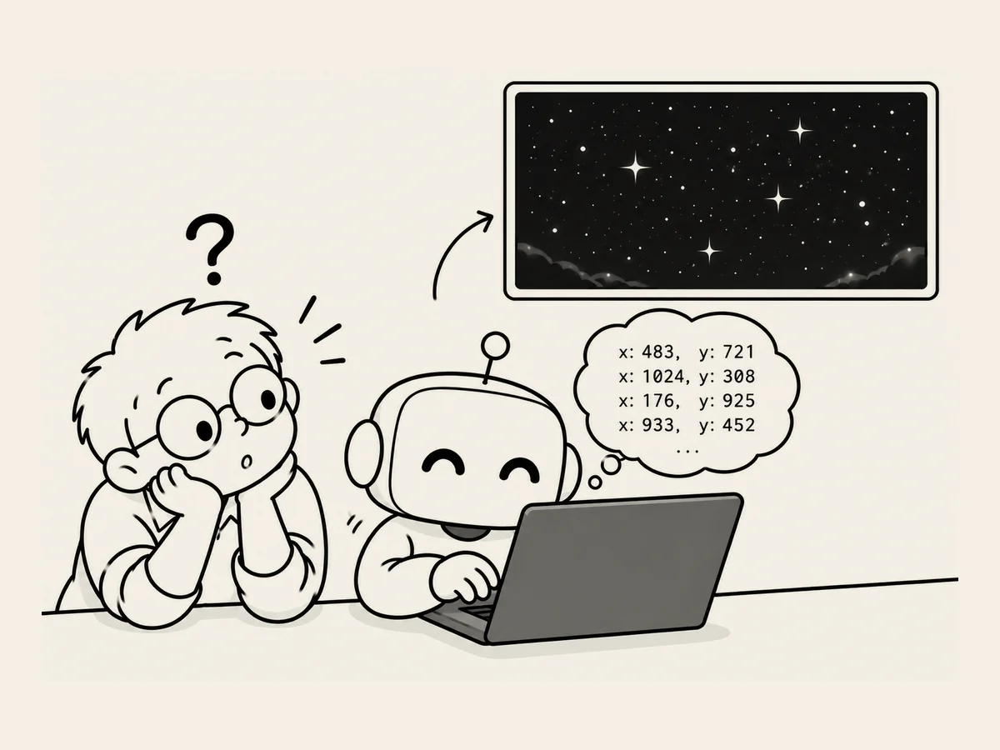

16.
How AI Draws Stars
While building my second website,
I wanted to fill the night sky with stars.
I asked AI to draw them.
The stars appeared.
But something was strange.
Instead of being scattered naturally across the sky,
they were lined up in a rectangular pattern.
“Make them look naturally scattered across the night sky.”
AI was turning the position of each star into numbers
and calculating its horizontal and vertical coordinates.
We adjusted things this way and that.
After a lot of trial and error,
we finally got a night sky that looked pretty good.
Later,
I happened to look at the code that made it.
It was using random numbers
to place the stars irregularly.
Each time a star appeared,
its position was calculated and generated.
Because of that,
it took a little time for the stars to appear.
Then a thought occurred to me.
“Can't we just put the stars into the background image beforehand?”
That made things simple.
Thinking about it,
what I'd asked AI to do—
“Just scatter them around naturally.”
—was actually a pretty difficult instruction.
A person could just pick up a brush
and put dots wherever they wanted.
